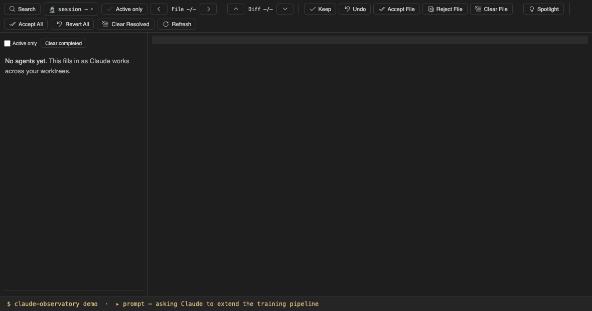
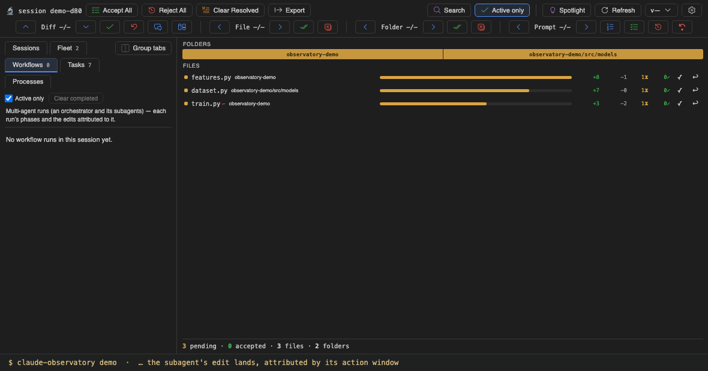
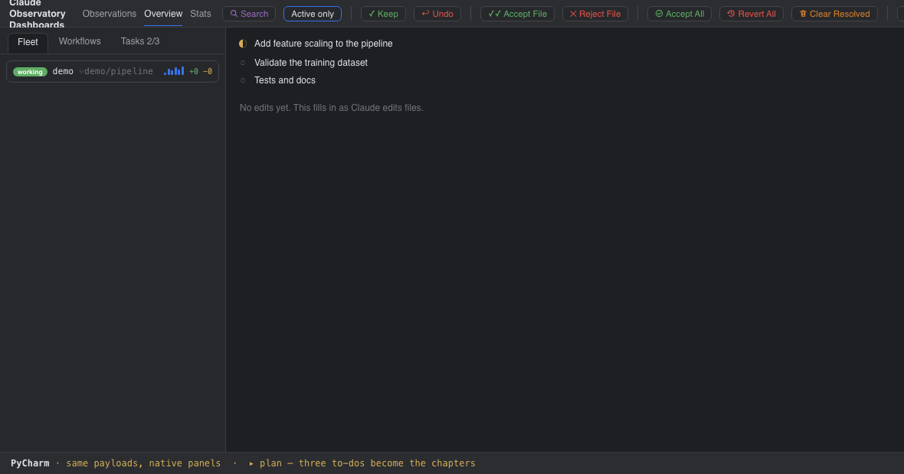
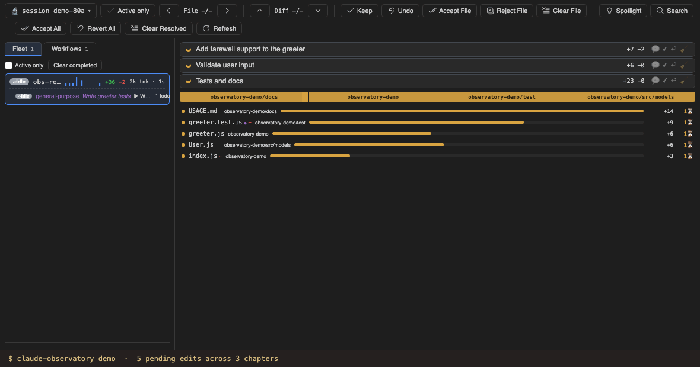
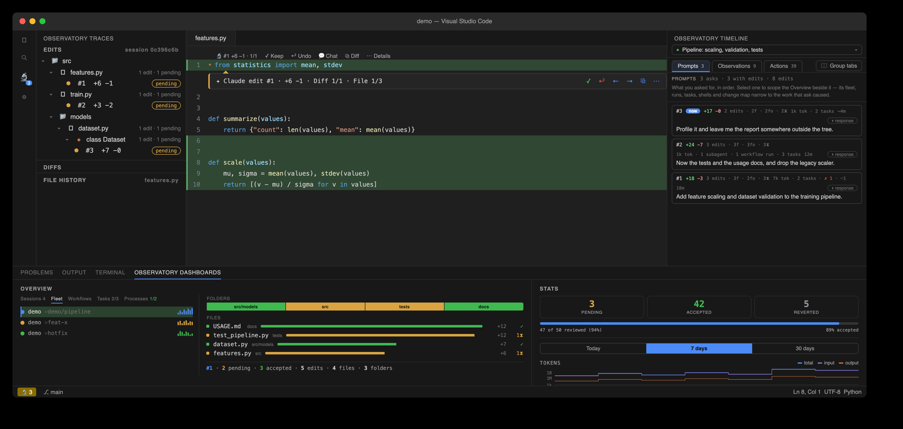
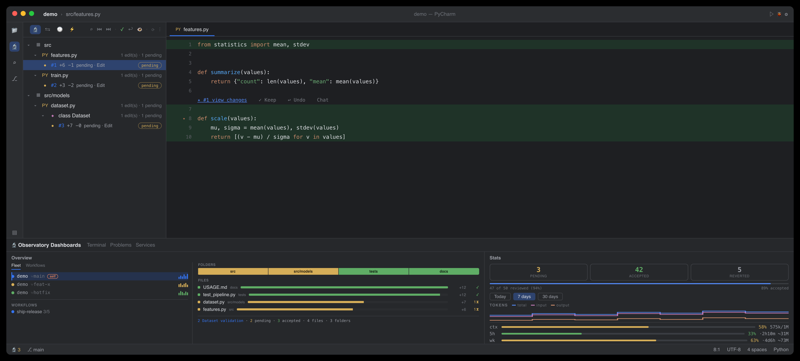

Run the demo
claude-observatory demo replays a scripted session through the real pipeline — a real transcript, with edits captured by the real hooks — inside an isolated demo-* session and an observatory-demo/ folder. Claude plans three numbered to-dos, which the run narrates as task 1, task 2, and task 3. The Overview's Tasks tab tracks them: an edit counts toward a task only while that task is in progress, and an edit outside those windows stays unassigned. The Folders strip and the Files ledger update live in the detail beside it, and the fleet row on the left tracks the agent's phase and ±lines. Everything shown is derived from the transcript and the capture hooks, at zero extra tokens.

Subagents and workflows
Mid-session, Claude delegates the tests to a subagent. It appears nested under its parent in the Fleet nav with its own phase, current task, and ±lines, and its edit is attributed to it by its action window rather than guessed. A workflow run then starts an agent one level above the subagents: the nav focuses the new run, shows it running, and on completion lists its phase groups, per-agent tokens · time · edits, and the run's own change-map slice — its folders and files — on the right.

The same session in JetBrains IDEs
The JetBrains plugin renders the same multitask, changemap, processes, and sessions payloads in native tool windows: the nav's Sessions, Fleet, Workflows, Tasks, and Processes tabs, the Folders strip, and the Files ledger. Every rollup is computed once in core and rendered as given, so both editors show identical numbers.

Review by task
The demo's edits are real store records on real files, so the review works normally. task-keep accepts exactly the edits captured while that task was in progress: accepting the first two tasks settles their rows while the third stays pending. task-undo reverts that same strict span on disk, conflict-guarded per edit. A prompt is one turn you wrote, together with the work it caused. Picking one in the neighboring Prompts window scopes the whole Overview to it, and Accept Prompt or Reject Prompt then acts on that work. A fully reviewed demo clears its own store, and claude-observatory demo --clean removes the session, the store, and the demo folder entirely.

Working with real sessions
Run claude-observatory init once, with Claude Code closed, and every later session is captured automatically — the same tasks, fleet, workflows, and review as the demo, in the 🔬 Observatory Traces sidebar and the Observatory Dashboards panel in both editors. Sessions running in several git worktrees are unified into one fleet in the Overview, live conflicts included (in the Actions view). Active only, on by default and remembered across restarts, hides finished agents, runs, and shells along with fully-reviewed work. The Sessions tab lists every session in this workspace by conversation recency, and selecting a row switches what the observatory reviews. The review nav bar steps the pending edits along four axes — Diff, File, Folder, and Prompt. On a real repo most captured edits are noise — lockfiles, dist/, generated clients — so a .observatoryignore, in ordinary .gitignore syntax, keeps them from being recorded at all.


Command-line usage
The claude-observatory CLI is a first-class front-end over the same store; the quick reference below covers the common commands. For more detail, see the full walkthrough, and every surface beside the term it presents in the Docs.